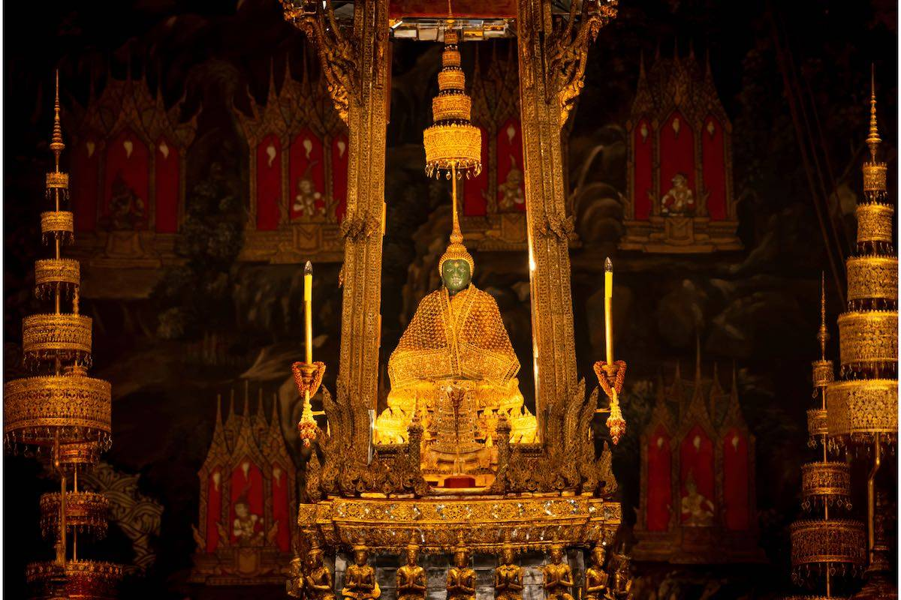
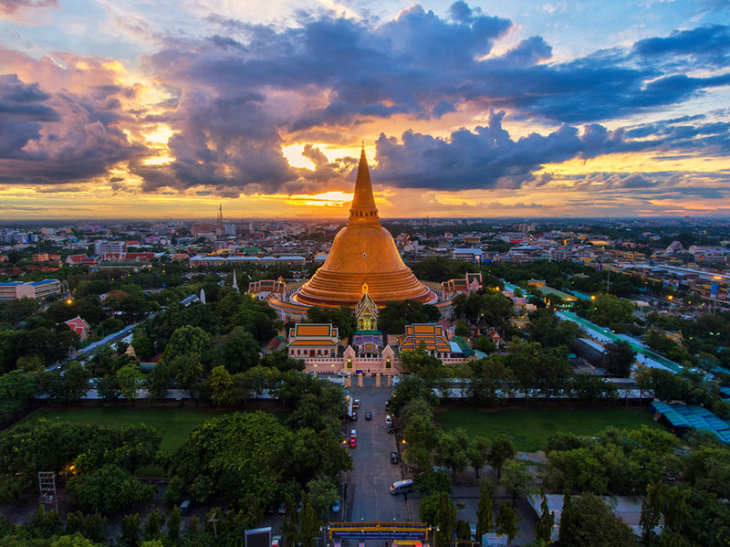
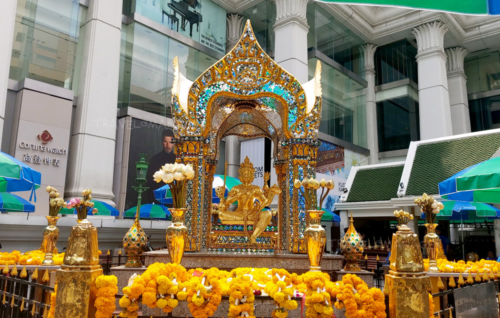
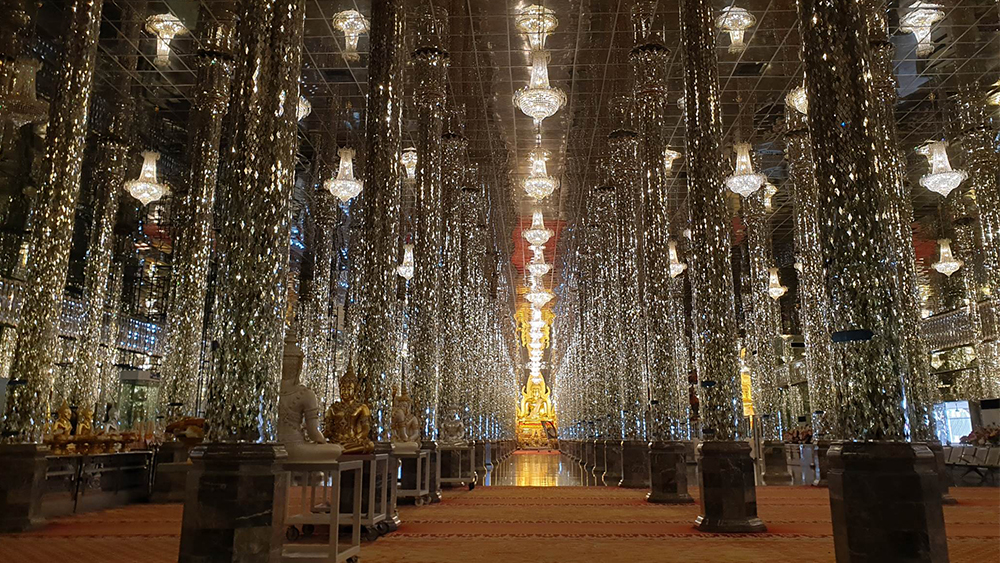
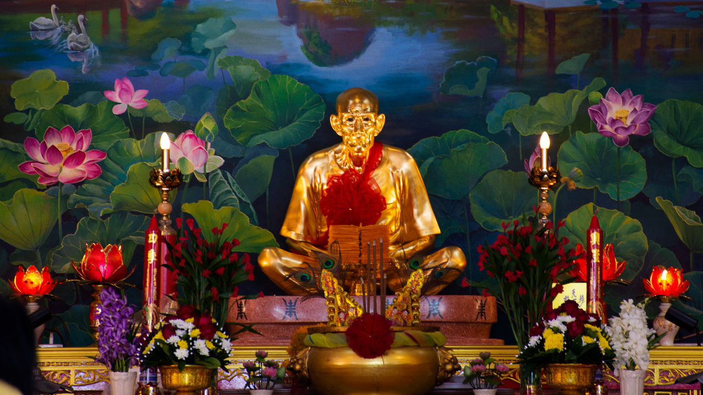
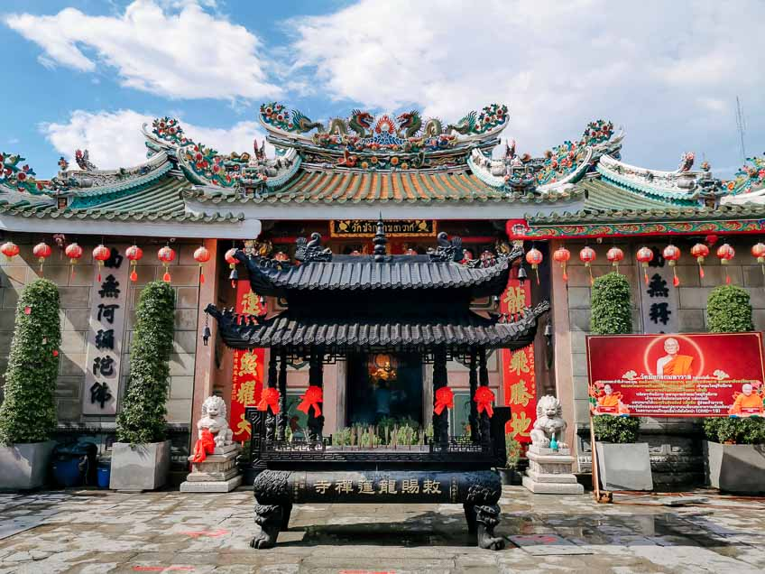

1. วัดพระศรีรัตนศาสดาราม (วัดพระแก้ว) - กรุงเทพฯ
ที่สุดของความศักดิ์สิทธิ์ ประดิษฐาน พระแก้วมรกต สิ่งศักดิ์สิทธิ์คู่บ้านคู่เมืองที่ใครมาภาคกลางต้องไปกราบสักครั้งเพื่อความสิริมงคลสูงสุด

2. หลวงพ่อโสธร วัดโสธรวรารามวรวิหาร - ฉะเชิงเทรา
ยืนหนึ่งเรื่องการขอพร โชคลาภและการงาน ใครอยากขอลูก (ยกเว้นขอไม่ให้โดนทหาร) หรือขอให้ธุรกิจปัง ต้องมาที่นี่

3. องค์พระปฐมเจดีย์ - นครปฐม
ปูชนียสถานเก่าแก่และใหญ่ที่สุดในไทย บรรจุพระบรมสารีริกธาตุ นิยมมาขอพรให้ชีวิตมั่นคงและร่มเย็นเป็นสุข

4. หลวงพ่อโต วัดพนัญเชิงวรวิหาร - อยุธยา
พระพุทธรูปริมน้ำองค์ใหญ่ยักษ์ที่มีตำนานเล่าขานมายาวนาน เด่นเรื่องการ ค้าขายและคุ้มครองดวงชะตา

5. ท้าวมหาพรหมเอราวัณ (แยกราชประสงค์) - กรุงเทพฯ
เทพเจ้าที่ขึ้นชื่อว่า "ขอได้ทุกอย่าง" โดยเฉพาะเรื่อง ความสำเร็จในหน้าที่การงาน ที่โด่งดังไปไกลถึงต่างประเทศ

6. วิหารแก้ว วัดท่าซุง - อุทัยธานี
สถาปัตยกรรมสุดอลังการประดับด้วยแก้วระยิบระยับ เป็นที่ประดิษฐานสังขารหลวงพ่อฤๅษีลิงดำ และขึ้นชื่อเรื่องการ ขอพรโชคลาภ (พระคาถาเงินล้าน)

7. เซียนแปะโรงสี วัดศาลเจ้า - ปทุมธานี
จุดเช็กอินยอดฮิตของพ่อค้าแม่ขายและนักธุรกิจ นิยมมาขอพรเรื่อง "ปลดหนี้-ค้าขายดี" และแก้ฮวงจุ้ย
8. หลวงพ่อใหญ่ วัดม่วง - อ่างทอง
พระพุทธรูปองค์ใหญ่ที่สุดในโลก ไฮไลต์คือการ "สัมผัสปลายนิ้วหลวงพ่อ" เพื่อรับพลังบุญและขอพรให้ก้าวหน้าในชีวิต

9. วัดมังกรกมลาวาส (เล่งเน่ยยี่) - กรุงเทพฯ
สถานที่หลักสำหรับ แก้ปีชง และฝากดวงชะตากับเทพเจ้าไท้ส่วยเอี๊ย เพื่อปัดเป่าเคราะห์ร้ายให้กลายเป็นดี
10. พระพุทธชินราช -พิษณุโลก
พระพุทธชินราช ประดิษฐาน ณ วัดพระศรีรัตนมหาธาตุวรมหาวิหาร (วัดใหญ่) จังหวัดพิษณุโลก ได้รับการยกย่องว่าเป็น พระพุทธรูปที่มีพุทธลักษณะงดงามที่สุดในประเทศไทย